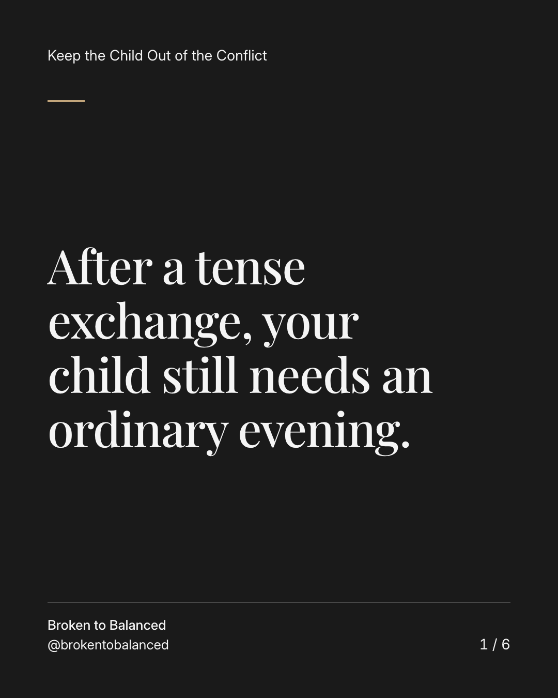
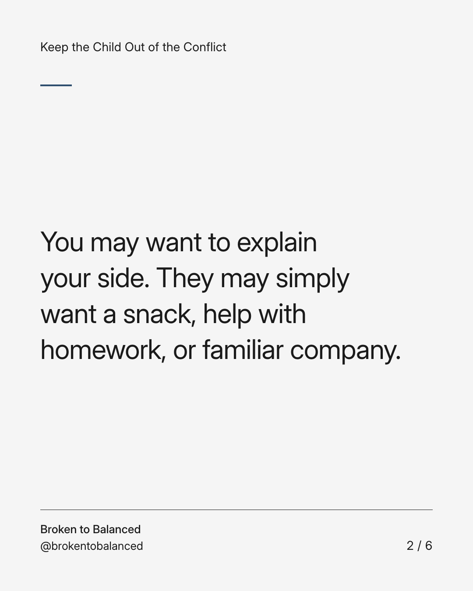
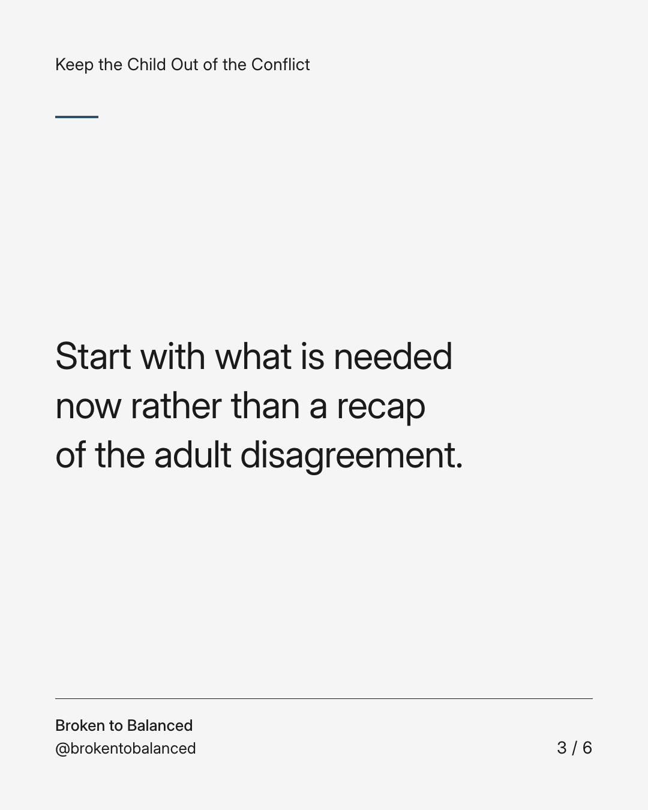
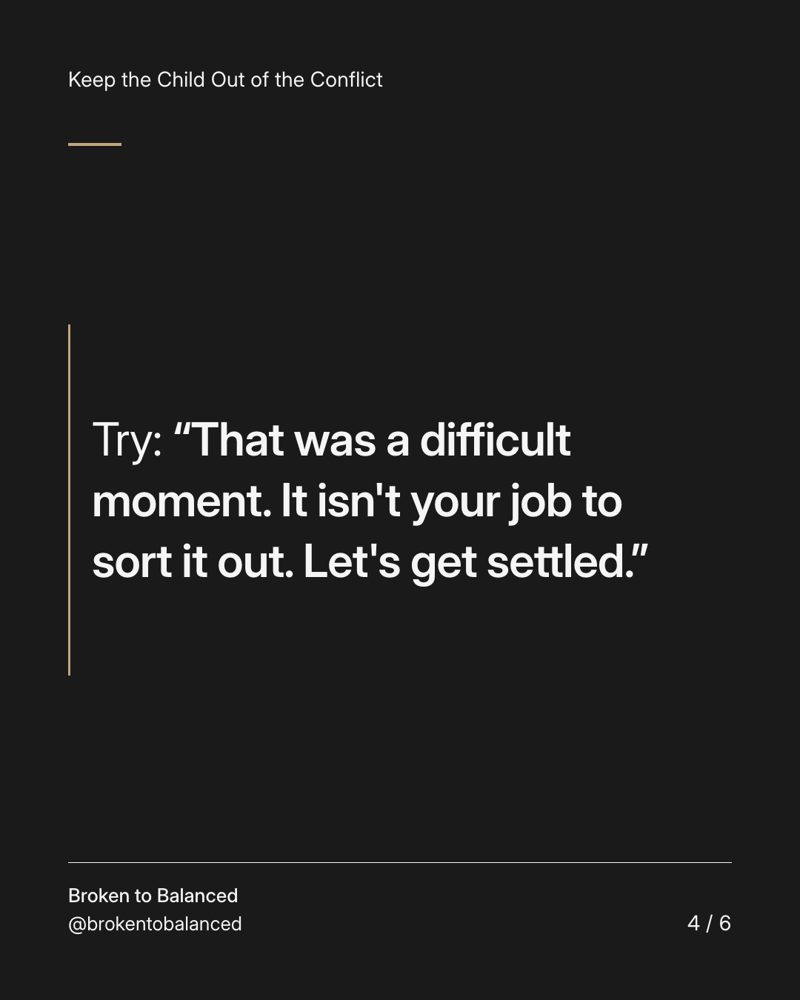
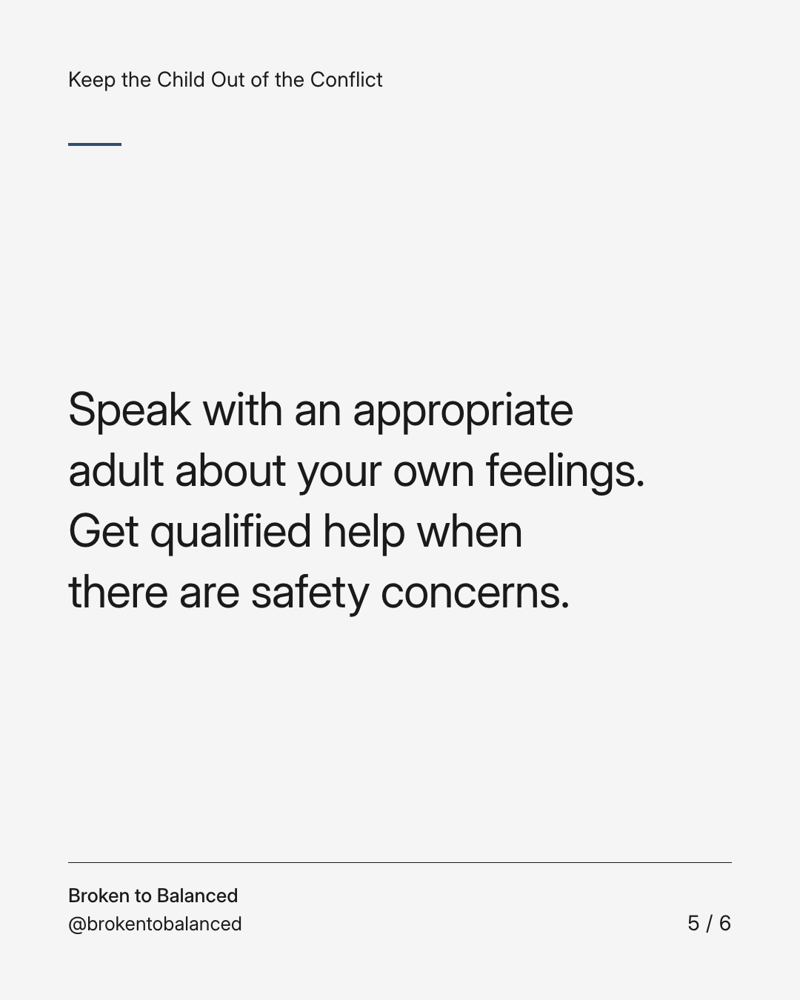
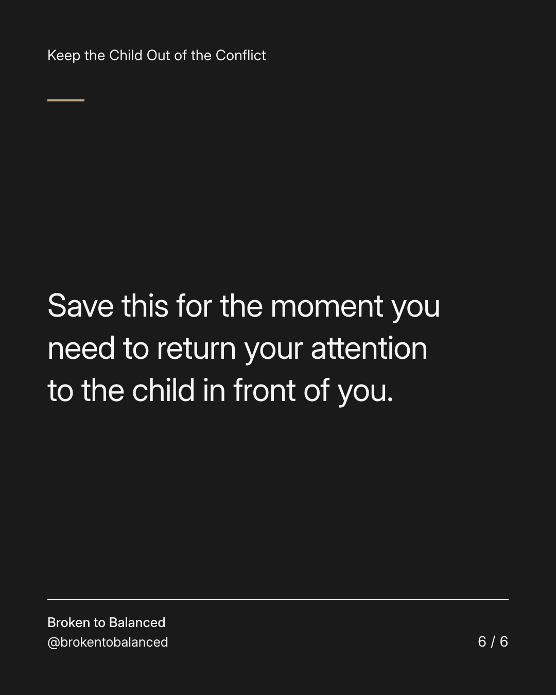

Exact text and accessibility text
After a tense exchange, your child still needs an ordinary evening.
Slide 1 of 6. After a tense exchange, your child still needs an ordinary evening.


Exact text and accessibility text
You may want to explain your side. They may simply want a snack, help with homework, or familiar company.
Slide 2 of 6. You may want to explain your side. They may simply want a snack, help with homework, or familiar company.


Exact text and accessibility text
Start with what is needed now rather than a recap of the adult disagreement.
Slide 3 of 6. Start with what is needed now rather than a recap of the adult disagreement.


Exact text and accessibility text
Try: “That was a difficult moment. It isn't your job to sort it out. Let's get settled.”
Slide 4 of 6. Try: “That was a difficult moment. It isn't your job to sort it out. Let's get settled.”


Exact text and accessibility text
Speak with an appropriate adult about your own feelings. Get qualified help when there are safety concerns.
Slide 5 of 6. Speak with an appropriate adult about your own feelings. Get qualified help when there are safety concerns.


Exact text and accessibility text
Save this for the moment you need to return your attention to the child in front of you.
Slide 6 of 6. Save this for the moment you need to return your attention to the child in front of you.
Exact caption
Plain-text fallback: select and copy the caption.